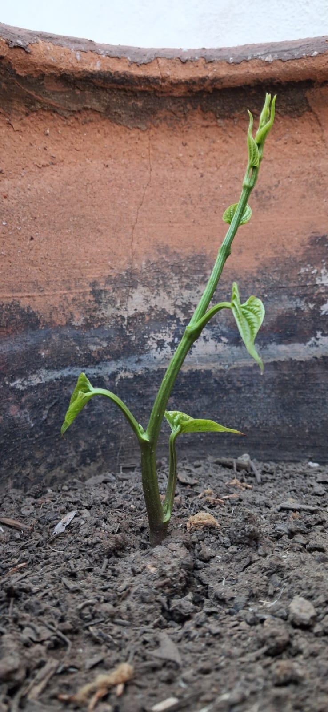
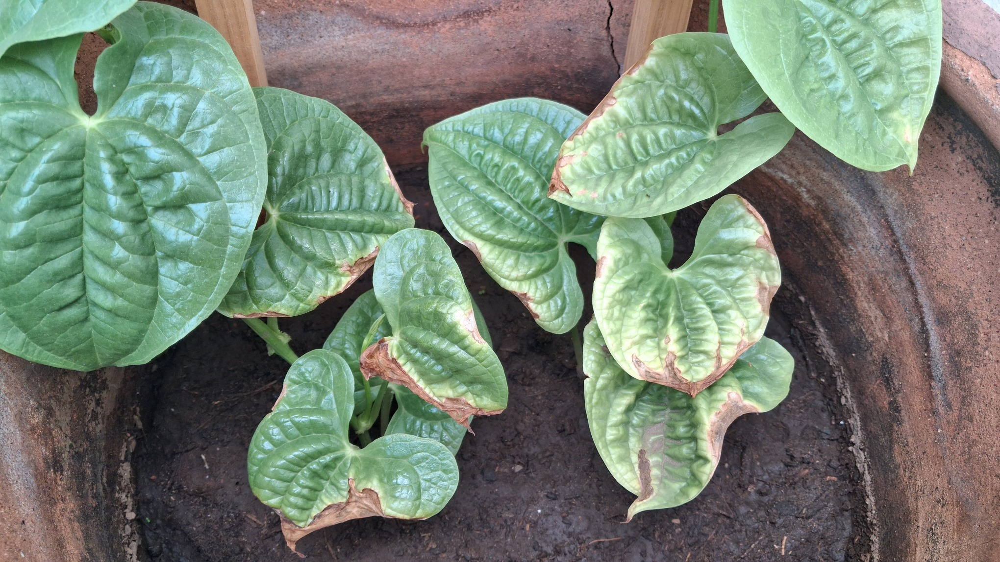

Para quienes lo desconocen (así como yo), existe una variedad de papa que podríamos considerar como local de Yucatán, y resulta que es una enredadera. Son papas de entre 5 y 7 cm.
En esta entrada vamos a aprender sobre el proceso de cultivar esta papa, información muy útil para tu huerto, o para personas como yo, que estaban comenzando en las bellas artes del trabajo con la tierra.

Primeros cuidados
La papa así como se ve en la imagen, se toma y se puede poner en tierra negra, sembrándola con unos 4 o 5 cm de tierra encima de ella, es posible emplear una cubeta, a partir de ahí puede ser regada cada día o con intermitencias según las lluvias, observa que la tierra en su superficie parezca húmeda y no totalmente seca. Las papas germinan en un periodo entre 15 y 21 días (2-3 semamas), la germinación más rápida se produjo con la papa que ya tenía unas raíces crecientes. Para este punto es recomendable ya tener un tutor, este tutor puede ser un palo de madera por el cual la planta pueda irse enredando, si se utiliza una malla los huecos deben ser amplios; sobre el mismo palo de madera la enredadera se puede extender hasta 2 m de longitud después de dos meses.

Inicialmente la papá crecía expuesta al sol, y así germinó, pero en un periodo iniciando las temperaturas más altas también (más de 35°C) sus primeras hojas comenzaron a quemarse, por lo tanto se recomienda que la papa sea protegida poniéndola a la sombra, con un breve tiempo de exposición al sol, entre unas 2 y 3 hrs (no todo el día).

Contemplando la planta
Aquí puedes dividir el artículo en temas. Puedes insertar imágenes entre secciones para romper el texto y hacerlo más agradable visualmente.
También puedes hacer textos largos sin que se vea saturado.
Conclusión
Aquí iría tu reflexión final.